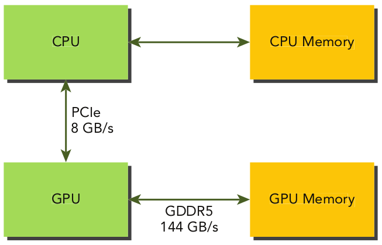

Memoria del GPU
Jerarquía de memoria (host)

No se puede programar los registros y caches.
Jerarquía de memoria (GPU)
Se puede programar cualquier espacio de memoria que no sea cache.
Memoria global
Memoria global
- La memoria principal del GPU, latency alto, bandwidth bajo.
- Se puede asignar memoria global en una forma dinamica con
cudaMalloc. - Se puede asignar memoria global en una forma estática en el device con
__device__. - El uso eficiente de la memoria global es muy importante para optimizar un código de CUDA.
Memoria global: declaración estática
Ejemplo 1: variableGlobal.cu
En este programa declaramos una variable global en la memoria global para el device.
#define N 10
__device__ int devVar[N];
int main(){
...
int hostVar[N];
...
cudaMemcpyToSymbol(devVar, &hostVar, N*sizeof(int));
...
}Memoria global: declaración dinámica
Ejemplo 2: variableGlobalDin.cu
Mismo programa, pero con una declaración dinámica de la variable (ahora no tiene global scope).
#define N 10
int main(){
...
int* hostVar = (int *) malloc(N*sizeof(int));
int* devVar;
cudaMalloc((int**)&devVar, N*sizeof(int));
...
cudaMemcpy(devVar, hostVar, N*sizeof(int), cudaMemcpyHostToDevice);
...
}Memoria global: acceso eficiente
La mejor forma de acceder a la memoria global es con acceso alineado y contiguo
Memoria global: acceso eficiente
El tema de acceso alineado no es tan importante comparado con el acceso contiguo.
Ejemplo 3: copiarFilas.cu y copiarColumnas.cu

Memoria global: acceso eficiente
Métricas en nvprof:
gld_efficiencygst_efficiency
En ncu:
- smsp__sass_average_data_bytes_per_sector_mem_global_op_st.pct
- smsp__sass_average_data_bytes_per_sector_mem_global_op_ld.pct
Eficiencia load/store para copiarFilas de $100\%$.
Para copiarColumnas la eficiencia de load es $25\%$, y para store es $12.5\%$.
Memoria global: acceso eficiente
Operaciones de load pasan por un cache.
Pero las operaciones de store no pasan por cache así que la eficiencia es menor para guardar valores.
Conclusión importante: el uso de la memoria global es mucho mas eficiente con acceso contiguo.
Transpuesta de una matriz
Transpuesta de una matriz

Transpuesta de una matriz
Ejemplo 4: transpuesta.cu
La versión que carga por columnas es más rápido... ¿por qué?
Las cargas de datos pasan por el cache, mientras la operación de guardar datos no utiliza ningún cache.
Es mejor tener acceso contiguo para guardar ya que no podemos aprovechar del cache en ese caso.
AoS vs. SoA
Opciones para estructuras de datos

Opciones para estructuras de datos
Ejemplo 5: aos.cu y soa.cu.
Normalmente se prefiere SoA en programación paralela (acceso contiguo en el GPU)
Alineamiento de estructuras
Parentesis importante (relevante para la programación en general):
La organización de los elementos en una estructura tiene consecuencia para el uso de la memoria!
Ejemplo 5a: alineamiento_datos.c
Memoria compartida
Memoria compartida
Memoria compartida
- Variables declaradas en el kernel con
__shared__están guardadas en memoria compartida. - Esta memoria está on-chip: bandwidth alto, latency bajo.
- Cada SM tiene una cantidad limitada de memoria compartida, dividida entre bloques de threads. Si usamos demasiado memoria compartida el número de warps activos está reducido.
- Memoria compartida permite comunicación entre los threads (dentro de un bloque).
Memoria compartida - declaración estática
__shared__ float tile[ny][nx];Declarada dentro de un kernel: scope local; declarada fuera de cualquier kernel: scope global.
Ya que la memoria compartida está asocidada a un bloque de threads, típicamente tenemos ny, nx igual a las dimensiones de un bloque.
Memoria compartida - declaración dinámica
extern __shared__ int tile[];Tiene que ser declarada dentro de un kernel.
El tamaño del array está definido en el momento de invocar el kernel con el tercer argumento al configuración del kernel.
kernel<<<grid, block, N * sizeof(int)>>>(...)Para declaración dinámica, se puede declarar arrays unidimensional solamente.
Transpuesta: memoria compartida
Volvemos al ejemplo de la transpuesta de una matriz, pero ahora vamos a usar memoria compartida.
Transpuesta: memoria compartida
Ejemplo 6: transpuesta_compartida.cu.
Hay tres kernels:
- El kernel para la transpuesta con memoria global.
- Un kernel que utiliza memoria compartida estática.
- Otro que utiliza memoria compartida dinámica.
Transpuesta: memoria compartida
Consideramos un ejemplo: matriz de $4 \times 4$ elementos, usamos bloques de $2 \times 2$ (memoria compartida del mismo tamaño).
blockDim.x, blockDim.y son iguales a $2$, hay $2$ bloques en cada dimensión.
Transpuesta: memoria compartida
ix = blockDim.x * blockIdx.x + threadIdx.x
iy = blockDim.y * blockIdx.y + threadIdx.yTranspuesta: memoria compartida
ti = iy * N + ixTranspuesta: memoria compartida
ixt = blockDim.y * blockIdx.y + threadIdx.x
iyt = blockDim.x * blockIdx.x + threadIdx.yTranspuesta: memoria compartida
to = iyt * N + ixt;Transpuesta: memoria compartida
tile[threadIdx.y][threadIdx.x] = entrada[ti];
__syncthreads();
salida[to] = tile[threadIdx.x][threadIdx.y];Acceso a la memoria compartida
Acceso a la memoria compartida

Acceso a la memoria compartida

Organizaciíon de la memoria compartida (bancos)
Organizaciíon de la memoria compartida (bancos)

Conflictos de bancos
Conflictos de bancos

Conflictos de bancos
Conflictos de bancos

Solución: padding

Transpuesta: conflictos de bancos
__shared__ float tile[BDIM][BDIM];
...
tile[threadIdx.y][threadIdx.x] = entrada[ti];
__syncthreads();
salida[to] = tile[threadIdx.x][threadIdx.y];Acceso por columna corresponde a acceso al mismo banco.
Transpuesta: conflictos de bancos
__shared__ float tile[BDIM][BDIM+1];
...
tile[threadIdx.y][threadIdx.x] = entrada[ti];
__syncthreads();
salida[to] = tile[threadIdx.x][threadIdx.y];Ahora los elementos de una columna van a bancos distintos.
Memoria constante
Memoria constante
- Reside en memoria del device, cada SM tiene un cache asignada a la memoria constante.
- Se declara una variable que se guarda en esa memoria con
__constant__. - Tienen que tener global scope, fuera de cualquier kernel. 64KB está disponible.
- Útil para constantes matemáticas aplicadas por todos los threads.
- Kernels solamente pueden leer de la memoria constante, así que hay que inicializarla desde el host:
cudaError_t cudaMemcpyToSymbol(const void* simbolo, const void* src, size_t count);
Memoria constante
Ejemplo 7: memoria_constante.cu
Memoria unificada
Transferencias de memoria

Ejemplo para Fermi C2050 GPU (Fuente: Professional CUDA C Programming)
Memoria pinned
- Memoria en el host es, por defecto, pageable.
- La memoria está organizada en páginas que el sistema operativo puede mover a la memoria virtual (memoria en el disco duro).
- Cuando el sistema requiere datos que están en el disco duro, ocurre un page fault, y los datos están copiados del disco al RAM.
- El GPU no tiene control sobre el movimiento de las páginas de memoria.
- Transferencie de datos del host al device involucra la asignación de memoria page-locked o pinned en el host.
- Los datos se transfieren de pageable a pinned y después al device.
Pinned memory

Asignación de memoria pinned
cudaError_t cudaMallocHost(void **devPtr, size_t count);cudaError_t cudaFreeHost(void *ptr);
El uso de demasiado memoria pinned puede afectar el rendimiento del sistema entero, ya que reduce la cantidad de memoria pageable disponible.
Ejemplo 8: pinnedMemoryTransfer.cu
Memoria unificada
- Desde CUDA 6.0, Unified Memory permite el acceso a la memoria usando un solo espacio de direcciones tanto para el GPU como para el CPU.
- UM se encarga de la transferencia de datos automáticamente.
- Basado en Unified Virtual Addressing (introducido en CUDA 4.0) que unificó el espacio de direcciones en memoria.
Declaración estática en memoria unificada (a veces llamada managed): __device__ __managed__ int y;
Asignación dinámica de memoria unificada: cudaError_t cudaMallocManaged(void **devPtr, size_t size, unsigned int flags=0);
El puntero devPtr está válido tanto en el device como en el host.
Memoria unificada
Ejemplo 9: memoria_unificada.cu